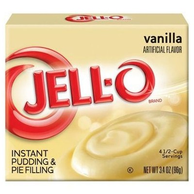
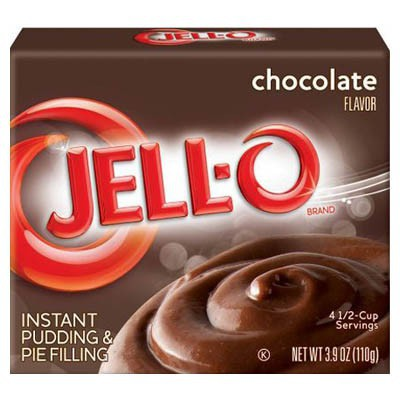
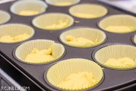

Holi bebés!
Hoy les tengo algo super sabroso y malosillo que se que les va a encantar. Mi familia, mis amigos, mis conocidos e incluso algunos profesores de mi Facultad han llegado a probar los cupcakes que hago y siempre me han dicho que estan deliciosos, hasta me han propuesto matrimonio por ellos 😆 #TrueStory
La receta es simple, les enseñaré a hacer estos cupcakes de chocolate con betún azul 👇
Para no hacerlo complicado yo utilizo una harina para pastel que venden en cualquier supermercado, mi favorita es de la marca Duncan Hines (Betty Crocker Cake Mix Devil´s Food y Pillsbury también son buenas por si no encuentran la Duncan Hines) en específico la de estilo Devil´s Food.  Y se prepara como viene en las instrucciones al reverso de la caja:
Y se prepara como viene en las instrucciones al reverso de la caja:
- Vacía la harina de la caja en un bowl para mezclar.
- 3 huevos.
- 1 taza de agua (yo prefiero usar leche).
- 1/3 de taza de aceite vegetal.
Ahora sí viene lo bueno....... el secretillo que hace estos cupcakes irresistibles es agregar un paquete de pudín para esta receta, yo usé el de Jell-O Instant Pudin sabor vainilla pero pueden jugar con las combinaciones del pan y el pudín que deseen. La preparación se realiza como lo menciona la caja:
- Vacía el contenido de la caja del pudín en la mezcla que ya hiciste del pastel.
- Batir el preparado con 500ml de leche durante 2 minutos.

Una vez que ya tienes la mezcla lista es hora de vaciarla en cada uno de los capacillos (moldes de papel), debes llenar hasta la mitad del capacillo (esto es ley para cualquier tamaño de capacillo), yo utilizo capacillos pequeños para mi máquina de cupcake pero hay de distintos tamaños. Puedes auxiliarte con una cuchara para que sea más fácil llenarlos. Una vez que ya tengas varios hechos es momento de hornearlos. 
Los puedes hacer en un horno eléctrico u horno de la estufa (no olvides precalentar el horno antes de introducir los cupcakes). En este caso yo lo hice con esta máquina para hacer cupcakes que me regaló mi mami 😊️

Esta máquina sólo la tienes que conectar y tiene un foco rojo y uno verde, hasta que se ponga verde debes introducir los cupcakes y cuando cambie de color es momento de sacarlos, otra forma para saber si ya están listos es con el viejo truco del palillo, utiliza un palillo de dientes e introducelo en uno de los cupcakes, si sale sucio de masa aún les falta tiempo, pero si sale limpio ya los puedes retirar.
Déjalos enfriar sobre la mesa y cúbrelos con una servilleta de tela, una vez que estén fríos es momento de ponerles el betún. Yo usé este betún Pillsbury (glaseado) es delicioso y además esta presentacion trae chispitas de colores para decorar. 👇

En otros posts les enseñaré cómo hacer betún casero e incluso un pastel y a ver que más se me ocurre compartirles. Espero les sirva mi receta y se pongan gorditos con estos cupcakes 😜
Si les gustó compártanlo con sus amigos en sus redes sociales para que no sean los únicos gorditos del grupo.
Mis Herramientas de trabajo
Laptop: Acer Aspire R15 Convertible
Cámara: Nikon D5300
Celular: Oneplus 3T